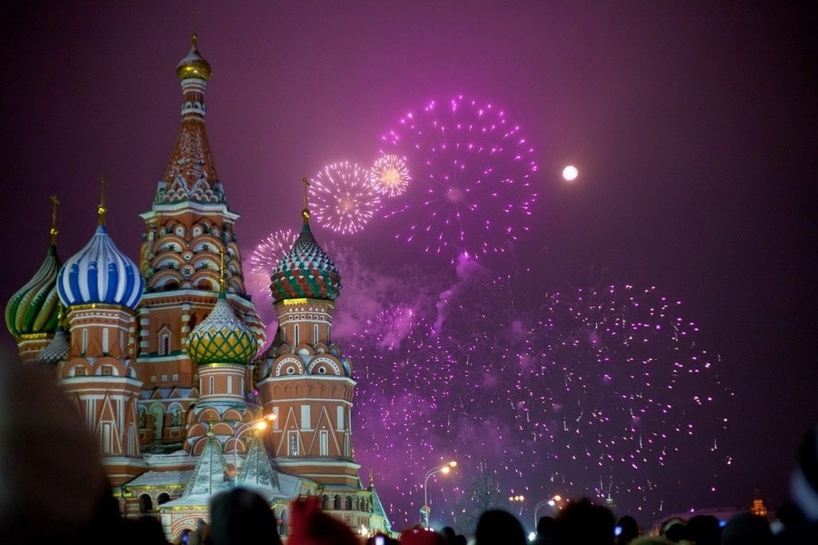
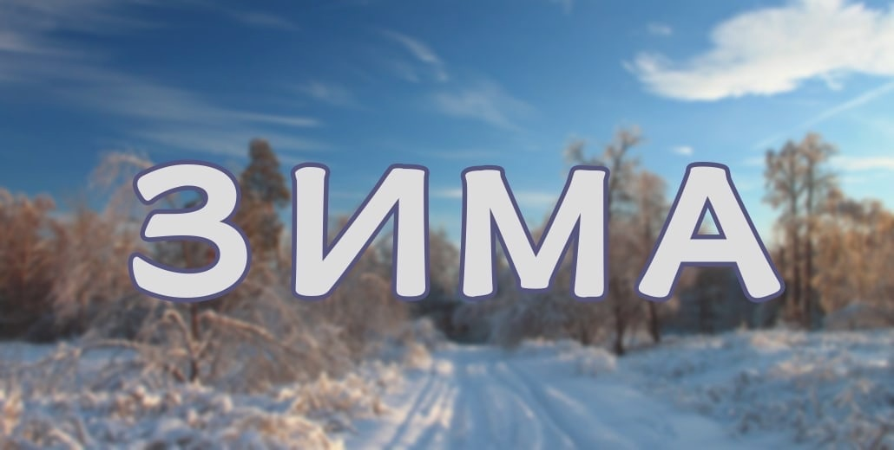
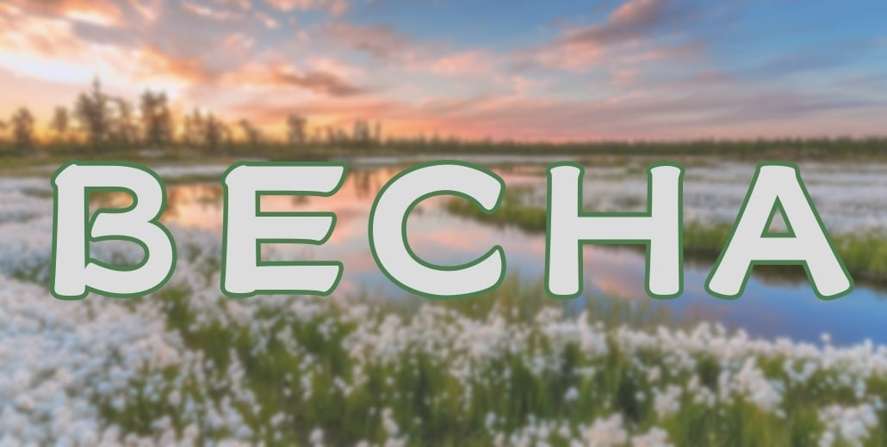
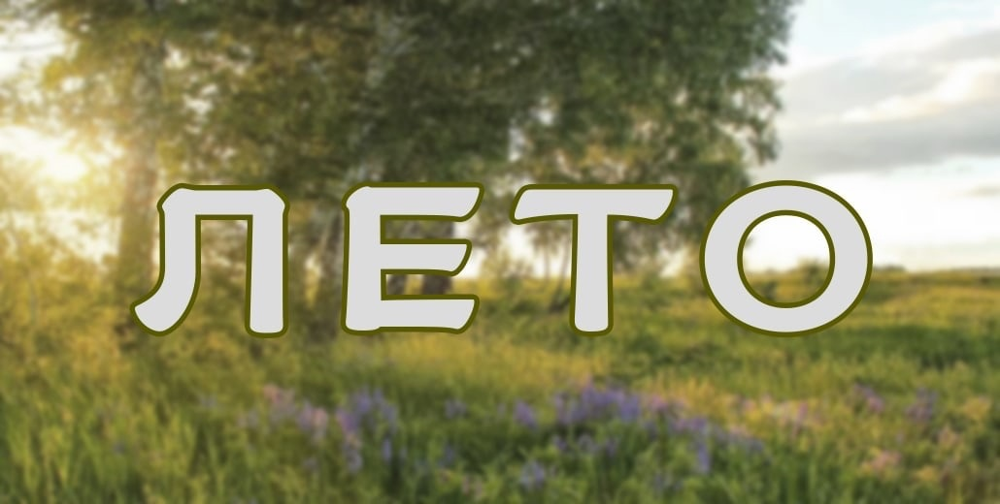
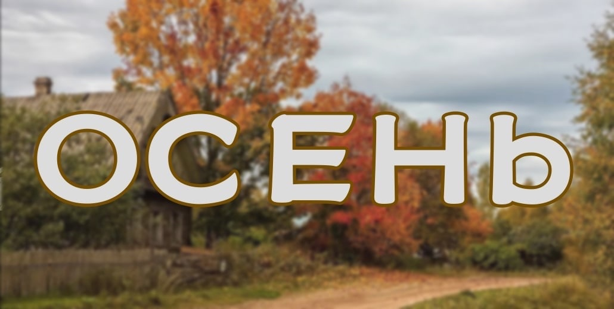

Праздник — это торжественный день, знаменующий о каком-либо важном событии и сопровождающийся различными увеселительными мероприятиями. С праздником у нас ассоциируется веселье, развлечения, изобилие гастрономических блюд, подарки или наоборот отдых. Праздники бывают у мужчин и женщин, у взрослых и детей, у врачей и учителей.



